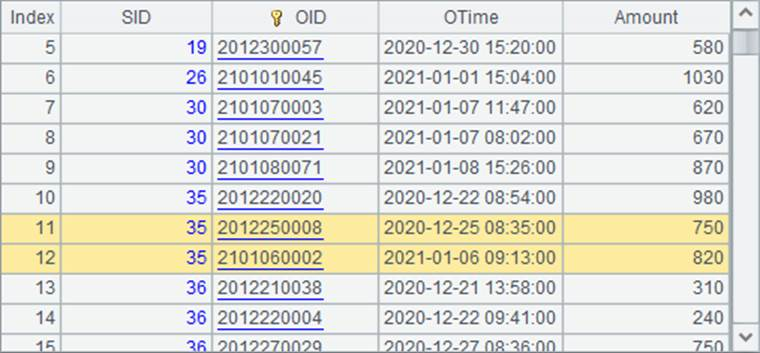
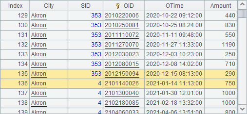

11.8.1 DQL startup
At present the DQL tool is only supplied in esProc enterprise edition. The startup class is com.scudata.ide.spl.dql.DQL. Executing the class and then we can define the metadata and perform DQL queries using DQL.
Below is the DQL interface after the tool is started:

Click ¡°New¡± icon or select File->New on the menu bar to begin to configure a new DQL file:

Select ¡°Logical metadata¡± to define metadata:
